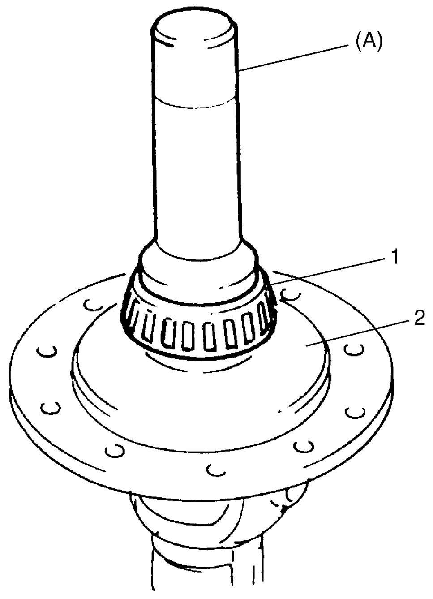
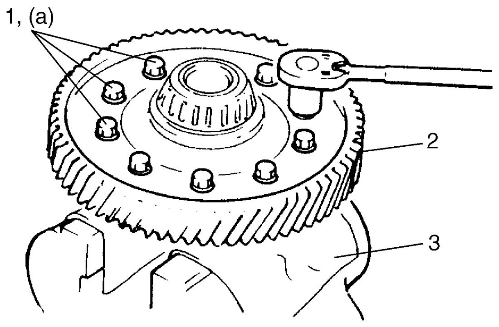

5B
| Differential Disassembly and Reassembly |
Disassembly
1)Support differential case with soft jawed vise and remove final gear bolts, and then remove final gear.
2)Remove left bearing (2) using bearing puller (1) and hydraulic press.

 "Expand image")
 "Expand image")
4)Remove differential pinion shaft pin using special tool and hammer and then disassemble component parts.

 "Expand image")
| 1. | Differential case | 3. | Differential pinion shaft |
| 2. | Differential side gear |
Reassembly
Judging from abnormality noted before disassembly and what is found through visual check of component parts after disassembly, prepare replacing parts and proceed to reassembly. Check that all parts are clean.
1)Install differential pinion, side gear (1) and pinion shaft to differential case (2) and measure thrust play of differential side gear as follows.
If measured value is not as specified, select suitable side gear washer (3) from the following available sizes, install it and check again.
If measured value is not as specified, select suitable side gear washer (3) from the following available sizes, install it and check again.
a)Differential side gear backlash
•Hold differential assembly with soft jawed vise and apply measuring tip of dial gauge to side gear as shown in figure.
•Fixing differential pinion, turn side gear back and forth and read dial gauge.
•Fixing differential pinion, turn side gear back and forth and read dial gauge.
Differential side gear backlash
0.10 – 0.15 mm (0.003 – 0.005 in.)
b)Differential side gear thrust play
•Hold differential assembly with soft jawed vise and apply measuring tip of dial gauge to side gear as shown in figure.
•Move side gear up and down by hand and read dial gauge.
•Move side gear up and down by hand and read dial gauge.
Differential side gear thrust play
0.03 – 0.31 mm (0.001 – 0.012 in.)
Available side gear washer thickness
| 0.85 mm (0.033 in.) | 1.05 mm (0.041 in.) |
| 0.90 mm (0.035 in.) | 1.10 mm (0.043 in.) |
| 0.95 mm (0.037 in.) | 1.15 mm (0.045 in.) |
| 1.00 mm (0.039 in.) | 1.20 mm (0.047 in.) |
 "Expand image")
2)Install new differential pinion shaft pin from right side until it is flat with differential case surface.
3)Press-fit left bearing (1) using special tool and hydraulic press.

 "Expand image")
| 2. | Differential case |
4)Press-fit right bearing (1) using special tools and hydraulic press.

 "Expand image")
| 2. | Differential case | 3. | Differential side left bearing |
5)Hold differential assembly with soft jawed vise (3), install final gear (2) and then tighten new final gear bolts (1) to specified torque.
NOTICE:
The bolts may loosen during operation of the differential if any bolts other than the specified bolts are installed.
Use only the specified bolts.

 "Expand image")